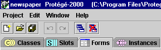

A Protégé-2000 project contains classes and instances. The Classes Tab is used by domain experts and knowledge engineers to create ontologies -- that is, to design a set of classes that describe the problem domain. The Instances Tab is used to acquire instances and is typically used by people who are neither domain experts nor knowledge engineers. For example, a team of medical specialists could carefully craft an ontology dealing with blood diseases. Then, nurses at a hospital could enter instances to describe each patient.
How do end users enter the instances? They fill out forms. Protégé-2000 generates a default form for every class. Protégé will attempt to create an initial, useful set of forms based on its knowledge of the ontology. These default user interfaces are not always user-friendly, however.
Forms Management solves this problem. Using the Forms Tab a developer can customize the way the forms look and feel. The forms you create for your classes at the Forms Tab are then used to enter instances at the Instances Tab. The Forms Tab also allows you to create several user interfaces for the same ontology -- forms for knowledge acquisition can be customized for groups of users.

Each form contains a number of user-interface widgets, which correspond to slots in the class. The currently selected widget, if any, is outlined in blue. Widgets are translated to entry fields in the Instances Tab, and control how users will enter information as instances. Each slot in the class is associated with a user-interface widget on the form.
Next: The Forms Tab